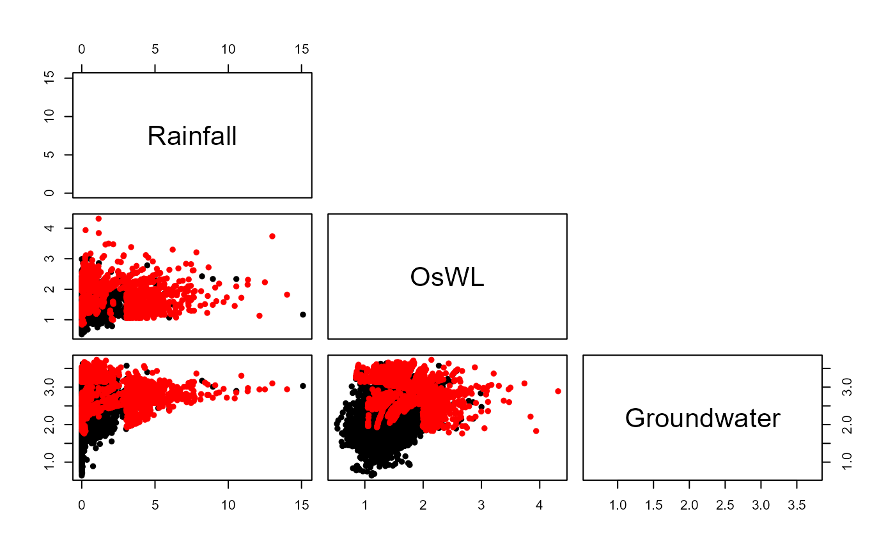

Fits and simulates from the conditional multivariate approach of Heffernan and Tawn (2004)
HT04.RdFits the conditional multivariate approach of Heffernan and Tawn (2004) to a dataset and simulates realizations from the fitted model. Function utilizes the mexDependence and predict.mex.conditioned functions from the texmex package.
Usage
HT04(
data_Detrend_Dependence_df,
data_Detrend_Declustered_df,
u_Dependence,
Migpd,
mu = 365.25,
N = 100,
Margins = "gumbel",
V = 10,
Maxit = 10000
)Arguments
- data_Detrend_Dependence_df
A data frame with (n+1) columns, containing in column
1 - Continuous sequence of dates spanning the first to the final time of any of the variables are recorded.
2:(n+1) - Values, detrended where necessary, of the variables to be modelled.
- data_Detrend_Declustered_df
A data frame with (n+1) columns, containing in column
1 - Continuous sequence of dates spanning the first to the final time of any of the variables are recorded.
2:(n+1) - Declustered and if necessary detrended values of the variables to be modelled.
- u_Dependence
Dependence quantile. Specifies the (sub-sample of) data to which the dependence model is fitted, that for which the conditioning variable exceeds the threshold associated with the prescribed quantile. Default is
0.7, thus the dependence parameters are estimated using the data with the highest30%of values of the conditioning variables.- Migpd
An
Migpdobject, containing the generalized Pareto models fitted (independently) to each of the variables.- mu
Numeric vector of length one specifying the (average) occurrence frequency of events in
data_Detrend_Dependence_df. Default is365.25, daily data.- N
Numeric vector of length one specifying the number of years worth of extremes to simulate. Default is
100years.- Margins
Character vector specifying the form of margins to which the data are transformed for carrying out dependence estimation. Default is
"gumbel", alternative is"laplace". Under Gumbel margins, the estimated parametersaandbdescribe only positive dependence, whilecandddescribe negative dependence in this case. For Laplace margins, only parametersaandbare estimated as these capture both positive and negative dependence.- V
See documentation for mexDependence.
- Maxit
See documentation for mexDependence.
Value
List comprising the fitted HT04 models Models, proportion of the time each variable is most extreme, given at least one variable is extreme Prop, residuals z, as well as the simulated values on the transformed u.sim and original x.sim scales.
Examples
#Fit GPD marginal distributions above the threshold
S20.Migpd<-Migpd_Fit(Data=S20.Detrend.Declustered.df[,-1],
Data_Full=S20.Detrend.Declustered.df[,-1],
mqu =c(0.99,0.99,0.99))
#Fitting and simulating from the Heffernan and Tawn (2004) model
S20.HT04<-HT04(data_Detrend_Dependence_df=S20.Detrend.df,
data_Detrend_Declustered_df=S20.Detrend.Declustered.df,
u_Dependence=0.995,Migpd=S20.Migpd,mu=365.25,N=1000)
#View model conditioning on rainfall
S20.HT04$Model$Rainfall
#> mexDependence(x = Migpd, which = colnames(data_Detrend_Dependence_df)[i],
#> dqu = u_Dependence, margins = "laplace", constrain = FALSE,
#> v = V, maxit = Maxit)
#>
#>
#> Marginal models:
#>
#> Dependence model:
#>
#> Conditioning on Rainfall variable.
#> Thresholding quantiles for transformed data: dqu = 0.995
#> Using laplace margins for dependence estimation.
#> Log-likelihood = -107.9634 -86.80361
#>
#> Dependence structure parameter estimates:
#> OsWL Groundwater
#> a 1.0000 0.3365
#> b 0.7072 -1.4030
#Assigning simulations (transformed back to the original scale) a name
S20.HT04.Sim<-S20.HT04$x.sim
#Plotting observed (black) and simulated (red) values
S20.Pairs.Plot.Data<-data.frame(rbind(na.omit(S20.Detrend.df[,-1]),S20.HT04.Sim),
c(rep("Observation",nrow(na.omit(S20.Detrend.df))),
rep("Simulation",nrow(S20.HT04.Sim))))
colnames(S20.Pairs.Plot.Data)<-c(names(S20.Detrend.df)[-1],"Type")
pairs(S20.Pairs.Plot.Data[,1:3],
col=ifelse(S20.Pairs.Plot.Data$Type=="Observation","Black","Red"),
upper.panel=NULL,pch=16)
